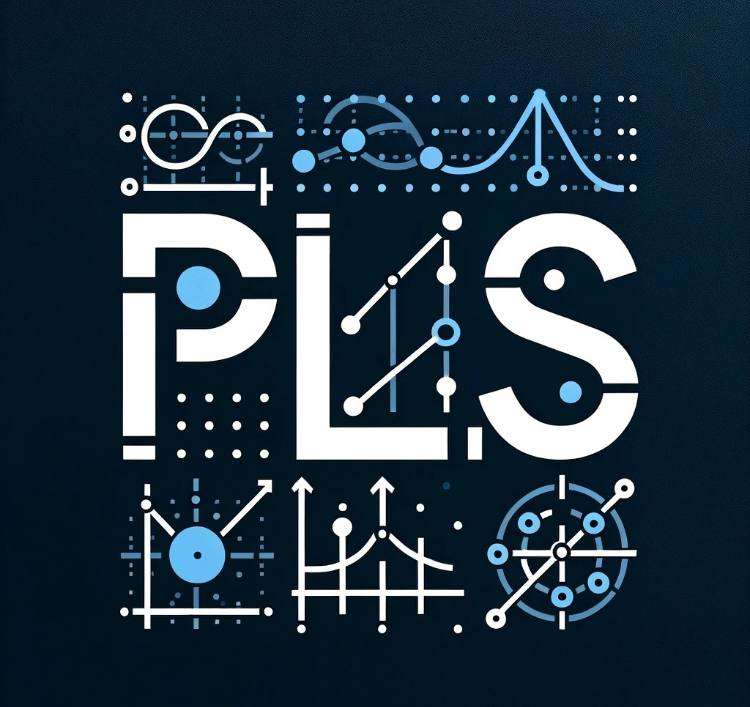
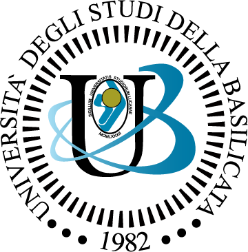

Illustrazione del Progetto
Il progetto "Lauree Scientifiche" in collaborazione con l'Università di Potenza si focalizza sull'applicazione dei concetti dei grafi in vari ambiti scientifici. Durante la mia collaborazione con il progetto, mi sono occupato della parte grafica della presentazione, creando rappresentazioni visive coinvolgenti e informative dei concetti legati ai grafi.

Partner Istituzionali

Logo ufficiale dell'Università della Basilicata
Università degli Studi della Basilicata
Partner accademico principale del progetto
Fornisce supervisione accademica e strutture di ricerca

Emblema ufficiale dell'I.T.I.S Einstein De Lorenzo
I.T.I.S Einstein De Lorenzo
Istituto tecnico partecipante al progetto
Contribuisce con studenti ricercatori e supporto tecnico